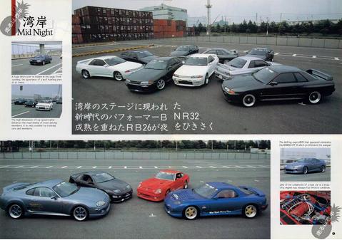
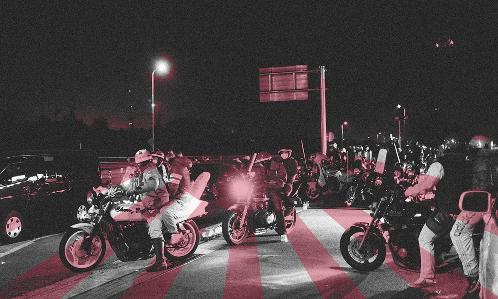
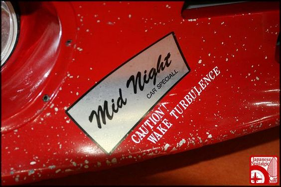
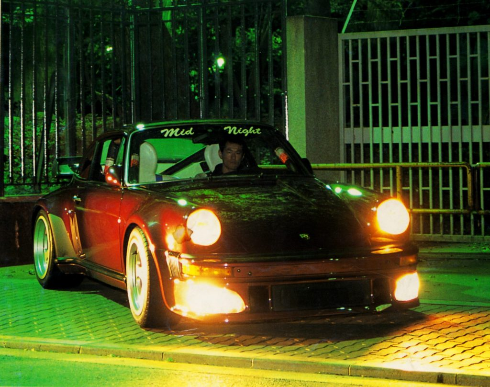
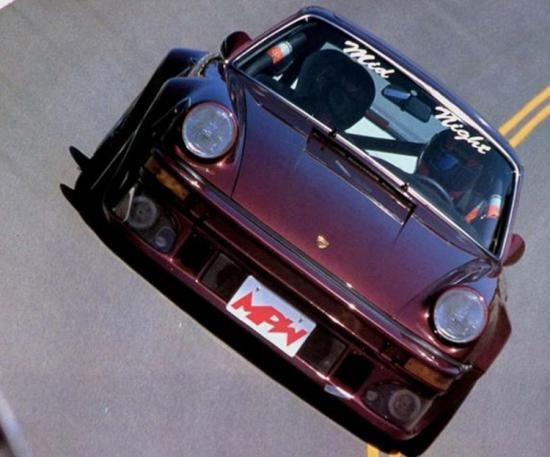

The Midnight Club
SPECIAL FEATURE
By:Darren Punzalan
9TH SEPTEMBER 2022
The Mid Night Club (ミッド ナイト クラブMiddo Naito Kurabu) was a Japanese street racing
gang that hosted illegal races on the Bayshore Route (known natively as the Wangan) of
the Shuto Expressway between Tokyo to Yokohama. The gang became one of the most notorious
and highly respected clubs of its type, which led to it being featured in over 200 editorial
features in most of the leading Japanese auto magazines and even in foreign magazines such as
the Danish Autoviz, the British Max Power and the American Turbo magazine. One of the earliest
non-Japanese media referrals was in the first episode of Jeremy Clarkson's Motorworld in January
1995, when the presenter Jeremy Clarkson, driving his Skyline GT-R around Japan, stated that his
car "is more likely to be seen in the Mid Night Club". That and because of its dangerously high
racing speed, it gave street racing in Japan a worldwide notoriety. The club was regarded as
one of the longest running street racing gangs.

To join the club, which was formed in 1985, was not as easy as the other clubs as it was governed
by a series of rules and was better organised. Additionally, unlike in other groups, the hashiriya
(street racer) car must be capable of going over 250 km/h (160 mph), as a racing speed of over 300
km/h (190 mph) was common. As new member are regarded as apprentices for one year, they are required
to attend all the meetings. Only 10% of drivers would qualify for full membership and they would
have to leave if they posed a danger to other motorists and to other members. Members would bear
the trademark small rectangle Mid Night sticker on their bumpers, a larger sticker on the sun visor
area, and sometimes a Mid Night Racing Team sticker on the side skirt. The high standard of the drivers
made it difficult for the police to catch them.
On average, there were 30 members in the club, and they met in a gas station in Yokohama at midnight,
as the name implies; races would take place on the Bayshore route and lead to another gas station in Tokyo.
As full-fledged members' cars were capable of performing over 320 km/h (200 mph), the cars were capable
of reaching over 400–600 bhp and one member was rumored to be spending over $2 million on
rebuilding and modifications of his Porsche 911. The drivers' professions were never revealed,
as by club policy members were not allowed to ask how other members got the money for modifications.
Only Max Power, in 1995, revealed the professions of two drivers: one, a RX-7 FD3S owner, was a property
developer; the other, who drove a Skyline GT-R R32, ran his family car sales business.
The club was reportedly disbanded in 1999 when a group of Bōsōzoku were waiting for the club to "play"
with them as they were racing down the expressway, culminating in an accident in which six bikers ended
up in the hospital and one was killed.

As was the club policy, such a happening would cause the club to
be disbanded immediately and forever. Since then there have been numerous imitators, but with tighter
traffic laws making things difficult, most of such groups have since been disbanded until it reveal in
facebook that they still around and doing well which make some believe actually the incident in 1999 did
happened but they just get down first until the situation is good enough for them to appear again.
Despite being no longer in existence, many automotive medias still cite the gang as an inspiration to
more irresponsible street racing gangs, such as the June 2008 issue of Max Power, when it ran an
article about a street racer gang in London, who claim to race in town centers rather than in expressways.
It might only be a very long stretch of highway but the Wangan, or Bayshore, is probably the most well known road in Japan. This is where back in the day the hashiriya used to battle each other in the famous high-speed races, and where the Mitto Natto or Midnight club was born. Today things have somewhat relaxed a bit, more police patrols and speed cameras have driven the night racers away but on the right night and at the right time you may still be able to see the odd GT-R and Supra blasting past you at 200 mph! Our journey begins in the main island of Odaiba. This route gives the best experience in pursuing top speeds because of it's straight roads and very few turns that's why this is a haven for street racers, and also there are a lot of tunnels with no cameras installed so you can drive freely without worrying about apprehensions.
What does it takes to join Midnight Club
When you applied in the 80s-90s you were first tested, your driving skills were closely examined and if you weren’t comfortable at high speeds (200+ km/h) for an extended time or drive in an unsafe manner you didn’t stand a chance. If you drove well then you were first an apprentice. While being an apprentice you also have to go to all the meetings and you are given a pink Mid Night sticker and at the end of the testing period all the club’s members have to unanimously accept you. That can take up to 5 years and then you get the silver Mid Night sticker from the chairman himself. There were other special stickers as well like the windshield one and the full “Mid Night Racing Team” on the side which can be seen on some cars.

In the very beginning of the club the process was a bit faster and didn’t take years but since the club got very popular
people started to join the club just for the silver sticker and sometimes people would even put fake stickers on their cars.
When that happened Mid Night decided to make joining the team harder and they also trademarked their name and logo because it
was being illegally sold. Real members peeled off fake stickers from cars if they encountered them.
Nowadays they don’t test and examine your street racing skills since they don’t do that anymore but they still accept new
members. You have to be extremely passionate for car culture and committed to the team. If you really want to join them you
might encounter them at car meets or events in Japan.
“What is needed is not horsepower, but the ability to accelerate in the corner.”- Kometani
Midnight Club Cars
In the very early days, there were some American brands represented in the club like Pontiac and Chevrolet which was logical since some of the members came from ACC. But as smaller, turbocharged engines became popular that also affected what cars were driven. In the mid-80s most of the cars were either Porsches or Z cars and some RX-7s but thrown into the mix there have been brands like Ferrari, Mercedes-Benz, Lamborghini, Honda, and Toyota. One of the more popular models in the 90s was the Nissan GT-R. When R32 was released it proved to be quite easily modifiable platform that achieved great results and soon a lot of the cars in Mid Night were GT-Rs and friendly rivalry between the Turbo Porsche and GT-R Nissans began. Also notable is the fact that the current member of Mid Night Club is Chief Product Specialist at Nissan – Hiroshi Tamura.
List of Cars in Midnight Club:
1. Porsche 911 (930, 964, 997, 991)
2. Porsche 924
3. Porsche 944
4. Toyota Supra (A70 & A80)
5. Nissan Fairlady Z (S130)
6. Nissan 300ZX (Z32)
7. Nissan GT-R (R32, R33, R34, R35)
8. Ferrari 348
9. Ferrari 458
10. Lamborghini Countach
11. Mercedes-Benz S-Class (W116)
12. Mercedes-Benz C63 AMG (W204)
13. Mercedes-Benz AMG GT4
14. Honda NSX (First Gen.)
15. Honda Today
16. Pontiac Firebird Trans Am (Second Gen.)
17. Chevrolet Camaro (Third Gen.)
18. Mazda RX-7 (FC, FD)
19. BMW M5
Note: this list is not exhaustive, some cars might be missing(please contact me about missing cars on one of my social medias below)
Yoshida's Porsche 930 Turbo
Yoshida and his 911 (1979 930 Turbo) have become synonymous with the team and is certainly the most
famous car of the whole group. The appeal of Porsches at that time was very high for different reasons.
One of them being the gentlemen’s agreement of 1977 that limited domestic Japanese cars to 180km/h, because
it was a foreign car it bypassed that. Porsche was also a serious player at various sports car races like Le
Mans which gave it a good reputation for speed and reliability. Since it was European it was also seen as something
a bit more exotic. The overall build of the 930 was also very capable and packed great potential for tuning.
Combining the light body with an air-cooled 3.3L flat-six engine and a turbocharger made the car go over 260-270km/h
without breaking a sweat.

The Porsche quickly became a top choice for serious highway racers.Yoshida’s car did a top
speed of 302.52km/h officially on a Yatabe test but the engine blew on that attempt. Yatabe was notoriously known for
being a hard testing ground. On the highways, it went at least 320km/h and maybe even faster. When accelerating the
car sounded like a jet engine and it was hard not to notice it coming your way and zooming right past.
For the tune of his 930 Yoshida got help from Porsche themselves! He actually got it shipped to Germany a couple of
times and Porsche mechanics worked on his car applying their racing know-how from building cars like the 934, 935 and
959. Upgrading everything from the brakes to the steering wheel. The only thing that was left mostly untouched was the
body itself with some additions to the front bumper to allow better brake cooling and also some NACA ducts instead of
the rear side window. As a sign of a true street racer, his speedometer was tilted 45 degrees to give a better view of
the top speed and revs, which was quite common at that time. The interior was fitted with a roll bar and leather bucket
seats, the dash was also upgraded with temperature gauges.
It is not clear how much money Yoshida poured into his project but it wasn’t cheap that’s for sure. In the end, because
of the swapped parts, it looked like a wolf in sheep’s clothing. A 930 turbo from the outside and a Porsche works race
car in the inside. A monster of a car.